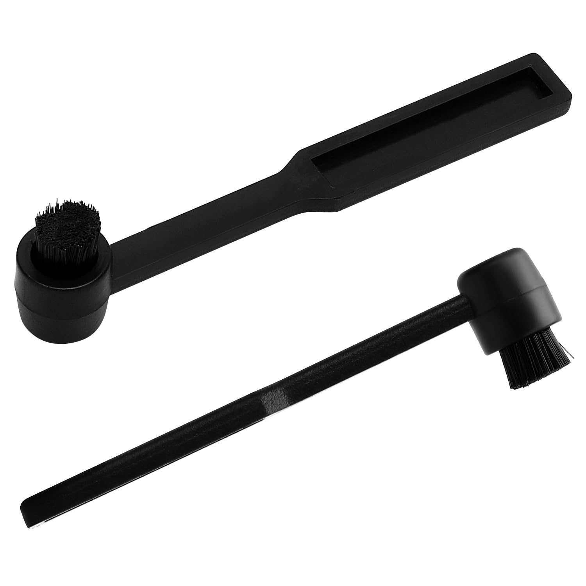
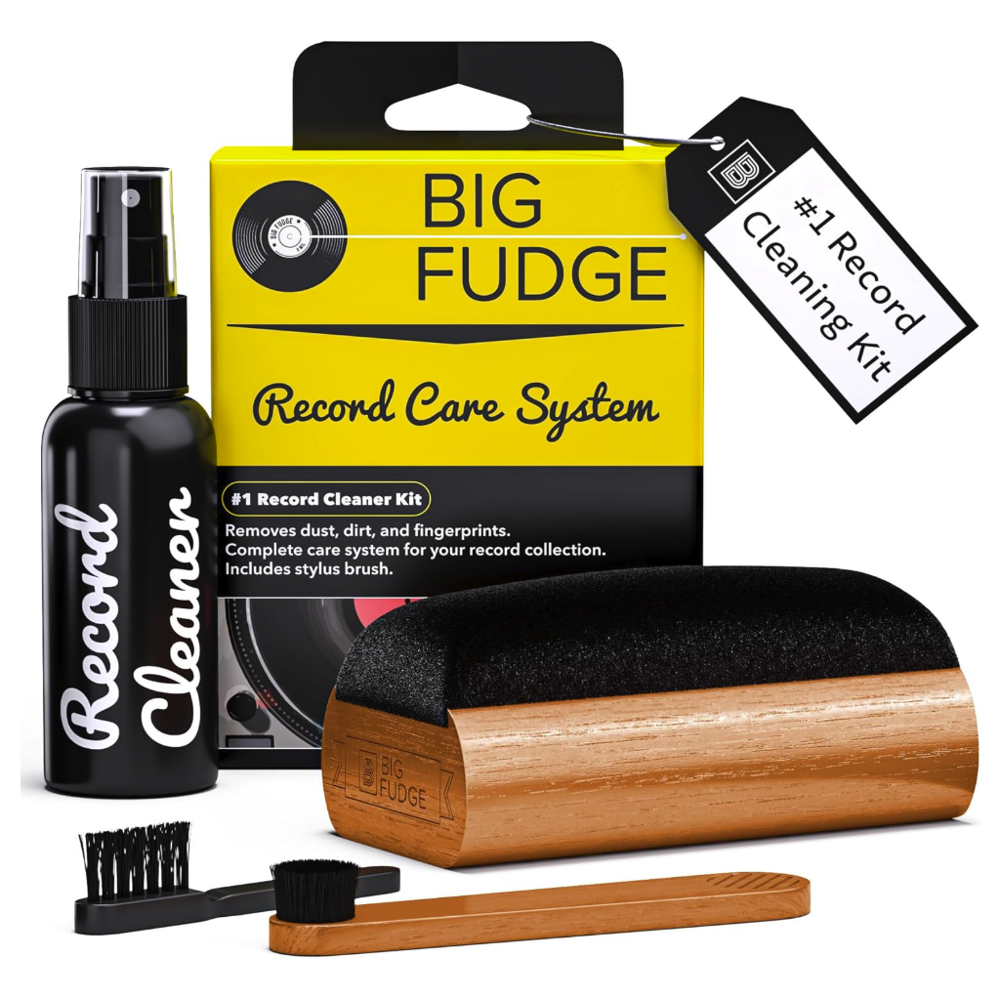

In order to ensure quality playback and longevity of the record + the needle, records should be cleaned every once in a while. I personally clean mine every time I play them, but im in a very dusty situation. Some people like to overcomplicate cleaning records with machines or saying one methods good while another is bad, but I like to keep it a bit simpler with stuff that just works.

The first step to a clean record is a clean turntable. The most important things here are to remember to use your dust cover, wipe down the platter, and clean the needle.
Kepeing the dust cover down between playback and during playback has its benefits. Between playback protects the turntable itself from bumps and prevents dust buildup over time. During playback protects the needle and record itself from damage, as well as dust accumulation as it plays.
Cleaning the platter is even simpler. If you have a hard slipmat, a Clorox wipe or just a microfiber cloth can be used. A felt one may have specific washing instructions so I'd check for those.
The needle is a very fragile part to clean. Specific brushes are made for the needle itself (see image above), and that should be the only way you clean your needle. Brush from back to front. Do not use gels as they can make your needle sticky and drag gunk through the grooves of records.
Unlike cleaning the turntable, cleaning records is a hotly debated topic. Many people argue about the different strategies when it comes to cleaning records. "Use this microvibration machine!" "Dont use that kit, it'll scratch it!" Blah blah blah. I'll teach you what I've found to work.

There are three tools I rely on heavily.
1: My Record Cleaning Kit
2: My General Purpose Brush
3: My Anti-Static Brush
These tools make it very simple to keep records clean. The cleaning kit comes with a cleaning solution, a velvet brush, a needle brush, and a hard plastic brush to clean the velvet brush with (Note: Do not use the small plastic brush on the record itself). To clean with this, use the small plastic brush on the velvet brush to clean it off, place your record on the turntable, turn the turntable on, spray 3 sprays on cleaning solution on the velvet brush, then lightly hold the velvet brush on the record for 3-4 revolutions. This picks up hair and cleans other oil and debris on the record. The anti-static brush should be used after this. Just hold the anti-static brush on the record for 3-4 revolutions. This improves sound quality and removes the crackling from static buildup, and can get out more particulate matter. The other general brush is good for spot cleaning. It's soft enough for you to just smack the record with it a little to get some dust off.